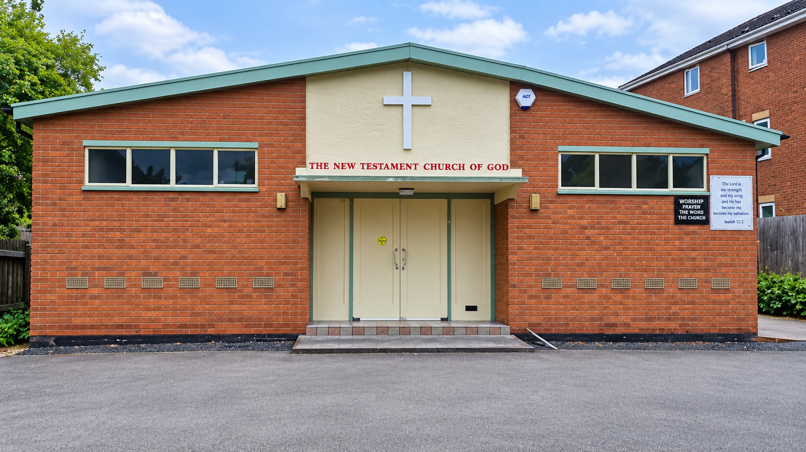

Worship Services & Timings
Join our welcoming Christian family every Lord's Day for passionate praise, exposition of the Word of God, and heartfelt fellowship.
Join our welcoming Christian family every Lord's Day for passionate praise, exposition of the Word of God, and heartfelt fellowship.
Located at Howard Street, Coventry, CV1 4GE. Everyone is warmly welcome regardless of background.
A contemporary service conducted in English with modern praise, uplifting prayer, and an inspiring sermon relevant to daily Christian life.
Our core congregation service in the Tamil language with traditional hymns, spirit-filled worship, Bible teaching, and corporate intercession.
Nurturing children in the love and wisdom of Jesus Christ with age-appropriate Bible stories, memory verses, songs, and creative activities.

Established on 16 March 2025, Rugby Tamil Cornerstone Church serves Tamil families and individuals residing in Rugby, Lutterworth, Daventry, and surrounding areas.
Walking through church doors for the first time should feel comfortable, peaceful, and inspiring.
Our welcoming ministry will greet you at the door, help you find seating, and answer any questions with genuine hospitality.
We adore God through passionate Tamil and English praise, combining beloved traditional hymns with modern Christian songs.
Pastor Clint brings practical, grace-filled, Christ-centered sermons from the Scriptures that equip your family for daily life.
Following each service, we share tea and light snacks. It is a wonderful opportunity to build genuine Christian friendships.
Clear parking guidance to ensure a smooth, worry-free arrival for you and your family on Howard Street.
Surrounding streets offer limited on-street parking options within 2-3 minutes walk from Howard Street. Please check council signage for Sunday restrictions.
Bird Street public pay-and-display car park is conveniently situated within walking distance of the church and provides ample spaces for Sunday visitors.
Public parking options are available along Stoney Stanton Road beside St Marks Coventry Church, only 3-5 minutes stroll from Howard Street.